Special Notes on Feb. 27, 2019
| Date: | Feb 27, 2019 |
|---|---|
| Last Updated: | Mar 4, 2019 |
| Categories: | |
| Tags: |

Contents
This article is incomplete now. Due to the problem of comprehension, I decide not to continue to review this article. Maybe I would try to review it again in the future.
Introduction
In this topic, we are learning an article for studying the theory of the convergence for the neural network applied on inverse problem. To be specific, the related articles include
[1]: NETT: Solving Inverse Problems with Deep Neural Networks:
[2]: Generalized Bregman distances and convergence rates for non-convex regularization methods:
Among these references, [1] is what we are mainly inspecting on. [2] and [3] are important supports for the theory. [4] is another paper which is more concentrated on application. We are trying to understand the theory of deep learning approaches for solving inverse problem in the notes. Since most of these papers are written in mathematically academic style, I could not ensure that all of my notes are coherent to the original works.
In the following parts, I would discuss about the issue according to the structure of [1]. In some sub-topics, I may introduce some extra theories from other articles. If we do not attach any notation, then it means this part is mainly from [1].
The issue
In this article, we define the problem as
where $\mathcal{D}$ is the distance function which could be L1 norm, L2 norm, or KL divergence, and $\mathcal{R}$ is the regularization function which could be Lq norm, or a deep network. $\mathbb{V}$ defines a space of learnable variables. In $(1)$, we assume that the the observed data $y_{\delta} = \mathbf{F}(x) + \xi_{\delta}$, which means the data has additive noise. However, if the data has no noise, i.e. the solution for $\mathbf{F}(x) = y_0$ exists, then we could have another form of the solution:
This paper is focus on the proof of convergence for using appropriate regularizer $\mathcal{R}$, which could be either predefined function or a learnable neural network. Here both of these two cases are discussed.
Non-convex Lq norm
We could use a non-convex Lq norm which is based on basis expansion:
where $\mathbf{V}$ is a diagonal matrix which weights the basis matrix $\boldsymbol{\Phi}$. Consider we are using N basis, then $\boldsymbol{\varphi}_{\lambda}$ is a row of the matrix $\boldsymbol{\Phi}$.If $\boldsymbol{\Phi}$ is fixed, then we know that $\mathbf{V} \in \mathbb{V}$. If we apply some techniques like dictionary learning, then $\mathbf{V},~\boldsymbol{\Phi} \in \mathbb{V}$.
Convolutional neural network
A general convolutional neural network (CNN) $\boldsymbol{\Phi}(\mathbb{V},~x)$ could be formulated as a composition of a series of operators
For any $l$, here we call $\sigma_l \circ \mathbb{V}_l$ “a layer of the network”. $\sigma_l$ is a nonlinear operator which could be ReLU, PReLU, or some other functions. $\mathbb{V}_l$ represents the affine linear operator of the layer, where $\mathbb{A}_l$ is defined by a series of convolutional functions $\mathcal{K}$. Assigning that there are $N^{(l)}$ channels for the lth layer, we know that $\lambda \in \mathbb{N} \cap [1,~N^{(l)}]$. Hence $\mathbb{A}$ maps the channels from the previous layer to the current one, while there are $N^{(l)}$ values in vector $b_l$ which is used to adjust the bias of the current layer.
If we use the network as the regularizer, then we have
NETT regularization
To understand this part, we may need to introduce the following definitions about topology:
Check here to see Norm-coercive mappings in Wikipedia.
Coercive function:
A function $f$ is coercive means, when $\lVert x \rVert \rightarrow \infty$, we have $\lVert f(x) \rVert \rightarrow \infty$.
λ open set:
Consider a set $A$, then we have
- For any $B \supseteq A$, if $A$ equals to the intersection of all $B$, we call $A$ the $\Lambda$ set.
- If $A$ could be represented by $A = B \cap C$, where $B$ is a lambda set and $C$ is a closed set, then we say $A$ is a λ-closed set.
- If $B$ is a λ-closed set, then for a space $\Omega$, $A = \Omega \backslash B$ is a λ-open set.
Check here to see Closure (topology) in Wikipedia.
Weakly continuous:
A function $f$ is weakly continuous if
- For any $x$, there exists a λ-open set $U$ that $x \in U$ and a open set $V$ that $f(x) \in V$.
- Consider that the closure of $V$ is $\mathrm{Cl}(V)$. If $f(U) \subset \mathrm{Cl}(V)$, then we say $f$ is weekly λ-continuous at $x$.
- For any $x$, if $f$ is weekly λ-continuous at $x$, then we say $f$ is weekly continuos.
To read further materials about the concepts related to topology, you may check the following link:
[5]: Weakly λ-continuous functions:
Here we would introduce another concept
Lower semi-continuous:
A function is lower semi-continuous when there exists countable points we are lower continuous ($x_0 = \lim\limits_{x \rightarrow x_{0-}} x$), while other points are continuous. Here we use a figure to show this concept.

Well-posedness and weak convergence
Now I have no idea on deriving this conclusion, because the original texts in the paper is ambiguous. As a compensation, I would try to finish this part in the future.
Consider a regularizer $\mathcal{R}(\mathbb{V},~\cdot)=\psi(\boldsymbol{\Phi}(\mathbb{V},~\cdot))$ which is defined by a CNN $\boldsymbol{\Phi}(\mathbb{V},~x)$. Here we would like to show a group of conditions:
- The regularizer $\mathcal{R}$ satisfies that:
- For layer $l$, we have $\mathbb{A}_l (x)$ is bounded linear, i.e. $\exists~c_l,~\lVert x \rVert \leqslant c_l \lVert \mathbb{A}(x) \rVert$;
- $\sigma_l$ is a weekly continuous and coercive function.
- $\psi$ is a lower semi-continuous and coercive function.
- The data consistency term should satisfied that
- For a $\tau \geqslant 1$, we have for any $y_1,~y_2,~y$, $\mathcal{D}(y_1,~y_2) \leqslant \tau \left( \mathcal{D}(y_1,~y) + \mathcal{D}(y,~y_2) \right)$.
- For any $y,~y_0$, $\mathcal{D}(y,~y_0)=0~ \Longleftrightarrow~ y=y_0$.
- For any $(y_k)_{k \in \mathbb{N}}$, $y_k \rightarrow y$~ \Longrightarrow~ \mathcal{D}(y_k,~y) \rightarrow 0$.
- $\mathcal{D}(\mathbf{F}(x),~y)$ is sequentially lower semi-continuous with respect to $x$.
We know that from the condition 1, we could derive the following conditions :
- $\mathcal{R}$ is weakly and sequentially lower semi-continuous.
- Since $\mathcal{R}$ is coercive, for all $t > 0,~ \alpha > 0$ and $y$, we have that $\{ x | \mathcal{T}_{\alpha,~y}(x) \leqslant t \}$ is sequentially weakly (closed and bounded).
From the above conditions, then we could know that :
Theorem 1
Well-posedness of CNN-regularization:
If the conditions 1,2 are satisfied, we would know that
For all $\alpha > 0$ and $y$, $\exists~\mathcal{T}_{\alpha,~y}(x)$.
If $y_k \rightarrow y$ and $x_k \in \arg \min \mathcal{T}_{\alpha,~y}(x)$, there exists the weak accumulation points $(x_k)_{k \in \mathbb{N}}$ which is derived from the minimizer $\mathcal{T}_{\alpha,~y}(x)$.
Consider $y = \mathbf{F}(x)$, we have $(y_k)_{k \in \mathbb{N}}$ that $\mathcal{D}(y_k,~y) + \mathcal{D}(y,~y_k) \leqslant \delta_k$, where $(\delta_k)_{k \in \mathbb{N}} \rightarrow 0$. Suppose that $x_k$ is kth iterative solution, i.e. $x_k \in \arg \min \mathcal{T}_{\alpha,~\delta_k}(x,~y_k)$. Then we could choose $\alpha$ that
\begin{align} \lim\limits_{\delta \rightarrow 0} \alpha (\delta) = \lim\limits_{\delta \rightarrow 0} \frac{ \delta }{ \alpha (\delta) } = 0. \end{align}Then we have such conclusions
Weak accumulation points $(x_k)_{k \in \mathbb{N}}$ are the solution of $\eqref{fml:iss:int2}$.
$(x_k)_{k \in \mathbb{N}}$ has at least one weak accumulation point $x_+$.
Any weakly convergent subsequence $(x_k)_{k \in \mathbb{N}}$ satisfies $\mathcal{R}(\mathbb{V},~x_{k(n)}) \rightarrow \mathcal{R}(\mathbb{V},~x_+)$.
If the solution of $\eqref{fml:iss:int2}$ (also the step 1) is unique, then we know $(x_k) \rightarrow x_+$.
Strong convergence and non-linearity
This article is still being produced. Please wait for several days to see the full edition.
Slides
View the slides here: